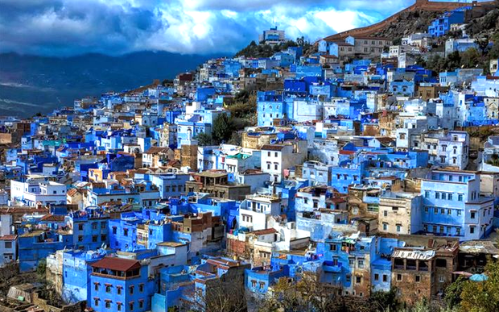
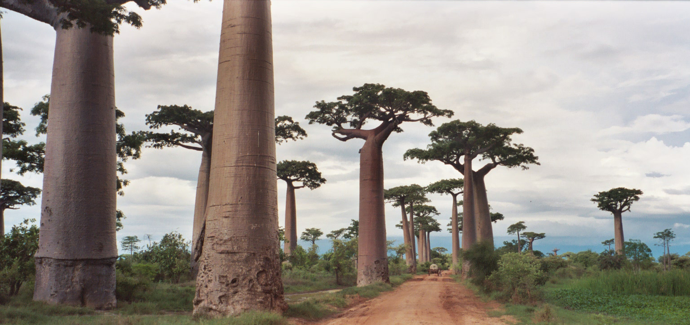
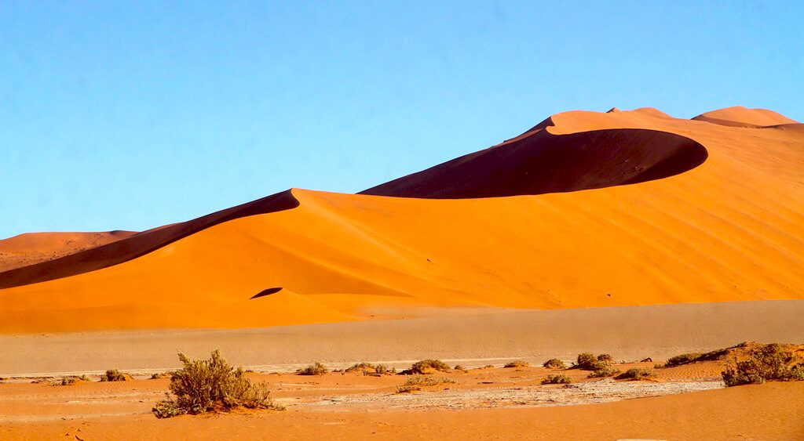

Chefchaouen: La Perla Azul
Marruecos: Chefchaouen es una ciudad cuyo color por excelencia es el azul. Situada en el norte del país,
a unos 115 kilómetros de Tánger, fue construida en un pequeño valle rodeado por las montañas del Rif. Aquí se vive en azul y
se pisa azul. Las casas encaladas, las puertas, las escaleras y las calles forman parte de una misma armonía cromática.
Sus callejuelas empinadas recuerdan a los pueblos andaluces, con recorridos que zigzaguean y ascienden hacia la colina,
como si la ciudad hubiera sido creada para tocar el cielo.

Avenida de los Baobabs
Madagascar: Un grupo de árboles milenarios gigantescos que bordean un camino de tierra. Se dice que son "árboles invertidos"
porque sus ramas parecen raíces buscando el cielo. La Avenida de los Baobabs de Madagascar, localmente conocida como Allée des Baobas, es uno
de los puntos más icónicos de la isla. Es solo un pequeño tramo de una carretera de tierra local, pero una vez estás allí es fácil entender por qué
se ha convertido en un sueño viajero para muchas personas. Sobre todo durante la puesta de sol, cuando las siluetas de los baobabs se dibujan sobre el cielo,
la Avenida de los Baobabs emana algo muy especial.

Sossusvlei: Las Dunas de Hierro
Mauritania: Aquí se encuentran las dunas de arena roja más altas del mundo. Destaca el "Deadvlei",
un lago seco con árboles petrificados de más de 900 años que contrastan con el naranja intenso de la arena y el azul del cielo.
La complejidad del entorno desértico siempre da lugar a curiosidades fascinantes. La palabra “Sossusvlei” puede traducirse como “pantano sin salida”
en afrikáans, haciendo referencia a la naturaleza del lugar: una zona donde el agua finalmente queda bloqueada por las dunas, creando lagos temporales
cuando ocurren lluvias excepcionales.